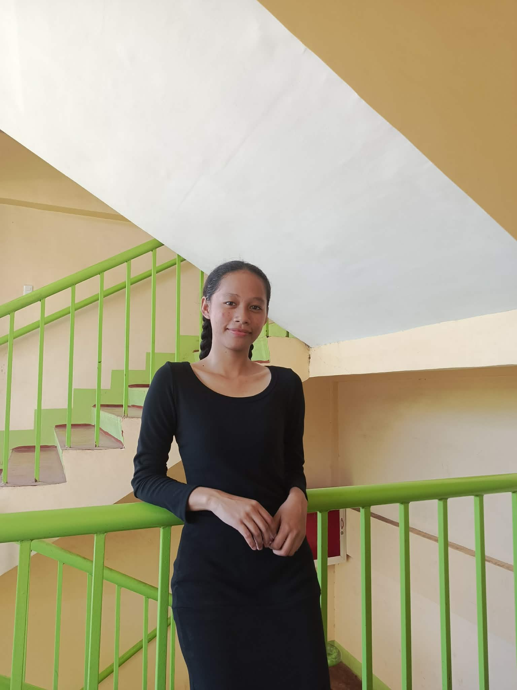
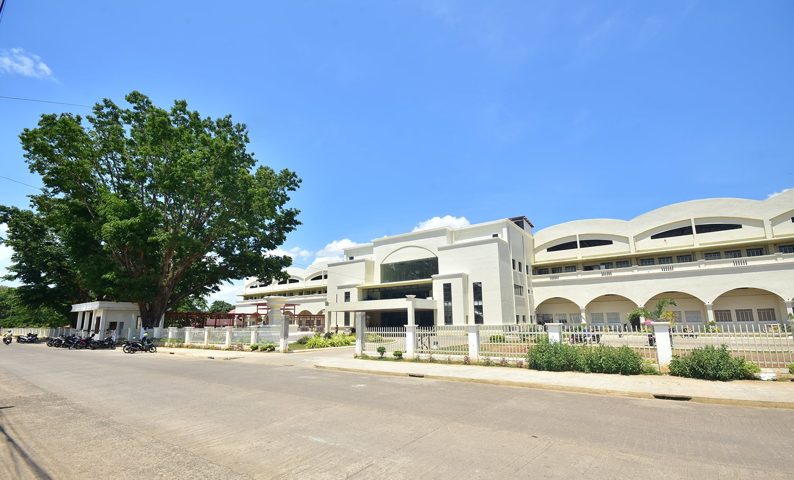

WELCOME TO ANGEL’S PAGE!
This page contains my reflections, insights, and personal learnings from the different
experiences and activities I have gone through.
Inside, you will find my inspirational portfolio, achievements, realizations, and the lessons
that helped shape who I am becoming as a student and as a person.
ENTER
